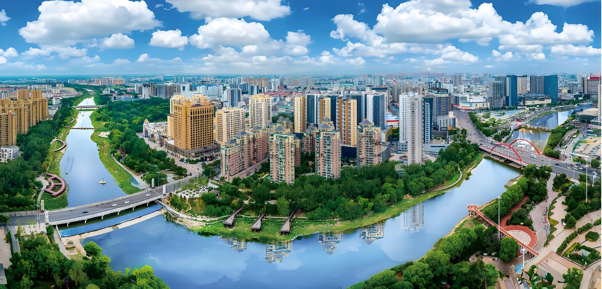

Welcome to Weifang

City Information
- Weifang is a prefecture-level city in central Shandong province, People's Republic of China.
- The city borders Dongying to the northwest, Zibo to the west.
- Its population was 9,086,241 at the 2010 census, of whom 2,659,938 lived in the built-up (or metro) area.
Delicious Food in Weifang
- Weifang Baozi - A type of stuffed bun that is a local specialty.
- Weifang Shaoji - A traditional chicken dish that is well-known throughout the region.
- Weifang Sausage - A unique local sausage that is a must-try for any food lover.
- Weifang Noodles - A popular local noodle dish with a rich and flavorful sauce.
Latest Update: 2024-5-10
Email: qu000030@algonquinlive.com